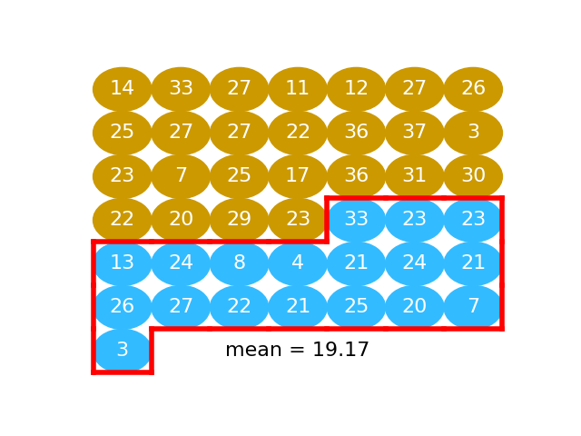
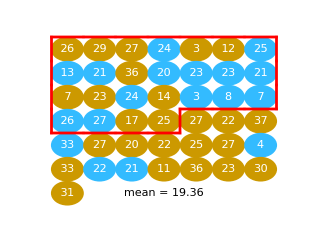

The idea of permutation#
This page shows how permutation works by comparing to a physical implementation of permutation, that randomizes values by mixing balls in a bucket.
Example: do mosquitoes like beer?#
This page shows how permutation works by comparing to a physical implementation of permutation by mixing balls in a bucket.

With thanks to John Rauser: Statistics Without the Agonizing Pain
The data#
If you want to run this notebook on your own computer, Download the data from
mosquito_beer.csv.
See this page for more details on the dataset, and the data license page.
# Import Numpy library, rename as "np"
import numpy as np
# Make random number generator.
rng = np.random.default_rng()
# Import Pandas library, rename as "pd"
import pandas as pd
# Safe setting for Pandas.
pd.set_option('mode.copy_on_write', True)
# Set up plotting
import matplotlib.pyplot as plt
plt.style.use('fivethirtyeight')
Show code cell content
# HIDDEN
# An extra tweak to make sure we always get the same random numbers.
# We need the same set of random numbers to match the illustrations below.
# Do not use this in your own code; you nearly always want an unpredictable
# stream of random numbers. Making them predictable in this way only makes
# sense for a very limited range of things, like tutorials and tests.
# As you can see, we replace the usual random number generator we
# made above, with another one with predictable random numbers.
rng = np.random.default_rng(seed=42)
Read in the data:
mosquitoes = pd.read_csv('mosquito_beer.csv')
mosquitoes.head()
| volunteer | group | test | nb_released | no_odour | volunt_odour | activated | co2no | co2od | temp | trapside | datetime | |
|---|---|---|---|---|---|---|---|---|---|---|---|---|
| 0 | subj1 | beer | before | 50 | 7 | 9 | 16 | 305.0 | 321.0 | 36.1 | A | 2007-08-28 19:00:00 |
| 1 | subj2 | beer | before | 50 | 26 | 7 | 33 | 338.0 | 720.0 | 35.3 | B | 2007-08-28 21:00:00 |
| 2 | subj3 | beer | before | 50 | 5 | 10 | 15 | 348.0 | 355.0 | 36.1 | B | 2007-09-15 19:00:00 |
| 3 | subj4 | beer | before | 50 | 3 | 7 | 10 | 349.0 | 437.0 | 35.6 | A | 2007-09-25 17:00:00 |
| 4 | subj5 | beer | before | 50 | 2 | 8 | 10 | 396.0 | 475.0 | 37.0 | B | 2007-09-25 18:00:00 |
Filter the data frame to contain only the “after” treatment rows:
# After treatment rows.
afters = mosquitoes[mosquitoes['test'] == 'after']
Filter the “after” rows to contain only the “beer” group, and get the number of activated mosquitoes for these 25 subjects:
# After beer treatment rows.
beers = afters[afters['group'] == 'beer']
# The 'activated' numbers for the after beer rows.
beer_activated = np.array(beers['activated'])
beer_activated
array([14, 33, 27, 11, 12, 27, 26, 25, 27, 27, 22, 36, 37, 3, 23, 7, 25,
17, 36, 31, 30, 22, 20, 29, 23])
The number of subjects in the “beer” condition:
n_beer = len(beer_activated)
n_beer
25
Get the “activated” number for the 18 subjects in the “water” group:
# Same for the water group.
waters = afters[afters['group'] == 'water']
water_activated = np.array(waters['activated'])
water_activated
array([33, 23, 23, 13, 24, 8, 4, 21, 24, 21, 26, 27, 22, 21, 25, 20, 7,
3])
Number of subjects in the “water” condition:
n_water = len(water_activated)
n_water
18
The permutation way#
Calculate difference in means
Pool
Repeat many times:
Shuffle (permute)
Split
Recalculate difference in means
Store
The next graphic shows the activated values as a series of gold and blue balls. The activated numbers for the “beer” group are gold), and the activated numbers for the “water” group, in blue:

Calculate difference in means#
Here we take the mean of “beer” activated numbers (the numbers in gold):

beer_mean = np.mean(beer_activated)
beer_mean
23.6
Next we take the mean of activation values for the “water” subjects (value in blue):

water_mean = np.mean(water_activated)
water_mean
19.166666666666668
The difference between the means in our data:
observed_difference = beer_mean - water_mean
observed_difference
4.433333333333334
Pool#
We can put the values values for the beer and water conditions into one long array, 25 + 18 values long.
In order to do this, we use the np.concatenate function. It does what we
want; it takes two arrays and splices them together into one long array. This
operation is called concatenation.
Here is np.concatenate in action:
first_array = np.array([10, 20, 30])
second_array = np.array([99, 199, 299])
# The two arrays concatenated.
both_together = np.concatenate([first_array, second_array])
both_together
array([ 10, 20, 30, 99, 199, 299])
We apply np.concatenate to pool our two groups of numbers into one array.
pooled = np.concatenate([beer_activated, water_activated])
pooled
array([14, 33, 27, 11, 12, 27, 26, 25, 27, 27, 22, 36, 37, 3, 23, 7, 25,
17, 36, 31, 30, 22, 20, 29, 23, 33, 23, 23, 13, 24, 8, 4, 21, 24,
21, 26, 27, 22, 21, 25, 20, 7, 3])
Shuffle#
Then we shuffle the pooled values so the beer and water values are completely mixed.
shuffled = rng.permutation(pooled)
shuffled
array([13, 36, 23, 21, 20, 12, 3, 23, 25, 25, 27, 22, 21, 25, 8, 29, 23,
30, 22, 22, 11, 21, 4, 17, 33, 26, 7, 36, 24, 27, 26, 20, 31, 14,
37, 23, 7, 27, 27, 24, 33, 3, 27])
This is the same idea as putting the gold and blue balls into a bucket and shaking them up into a random arrangement.

Split#
We take the first 25 values as our fake beer group. In fact these 25 values are a random mixture of the beer and the water values. This is the same idea as taking 25 balls at random from the jumbled mix of gold and blue balls.
# Take the first 25 values
fake_beer = shuffled[:n_beer]

We calculate the mean:
fake_beer_mean = np.mean(fake_beer)
fake_beer_mean
20.64
Then we take the remaining 18 values as our fake water group:
fake_water = shuffled[n_beer:]

We take the mean of these too:
fake_water_mean = np.mean(fake_water)
fake_water_mean
23.27777777777778
The difference between these means is our first estimate of how much the mean difference will vary when we take random samples from this pooled population:
fake_diff = fake_beer_mean - fake_water_mean
fake_diff
-2.637777777777778
Repeat#
We do another shuffle:
shuffled = rng.permutation(pooled)

We take another fake beer group, and calculate another fake beer mean:
fake_beer = shuffled[:n_beer]
np.mean(fake_beer)
19.36
We take another fake water group, find the mean:

fake_water = shuffled[n_beer:]
np.mean(fake_water)
25.055555555555557
Now we have another example difference between these means:
np.mean(fake_beer) - np.mean(fake_water)
-5.695555555555558
We can keep on repeating this process to get more and more examples of mean differences:
# Shuffle
shuffled = rng.permutation(pooled)
# Split
fake_beer = shuffled[:n_beer]
fake_water = shuffled[n_beer:]
# Recalculate mean difference
fake_diff = np.mean(fake_beer) - np.mean(fake_water)
fake_diff
-5.79111111111111
It is not hard to do this as many times as we want, using a for loop:
fake_differences = np.zeros(10000)
for i in np.arange(10000):
# Shuffle
shuffled = rng.permutation(pooled)
# Split
fake_beer = shuffled[:n_beer]
fake_water = shuffled[n_beer:]
# Recalculate mean difference
fake_diff = np.mean(fake_beer) - np.mean(fake_water)
# Store mean difference
fake_differences[i] = fake_diff
plt.hist(fake_differences);
We are interested to know just how unusual it is to get a difference as big as we actually see, in these many samples of differences we expect by chance, from random sampling.
To do this we calculate how many of the fake differences we generated are equal to or greater than the difference we observe:
n_ge_actual = np.count_nonzero(fake_differences >= observed_difference)
n_ge_actual
580
That means that the chance of any one difference being greater than the one we observe is:
p_ge_actual = n_ge_actual / 10000
p_ge_actual
0.058
This is also an estimate of the probability we would see a difference as large as the one we observe, if we were taking random samples from a matching population.